In this section we will study situations where everything of importance occurs in a two-dimensional plane and the third dimension is not involved. Studying two-dimensional problems is worthwhile because they illustrate all the important principles of engineering statics while being easier to visualize and less mathematically complex.
We will normally work in the “plane of the page,” that is, a two-dimensional Cartesian plane with a horizontal \(x\) axis and a vertical \(y\) axis discussed in Section 2.3 previously. This coordinate system can represent either the front, side, or top view of a system as appropriate. In some problems it may be worthwhile to rotate the coordinate system, that is, to establish a coordinate system where the \(x\) and \(y\) axes are not horizontal and vertical. This is usually done to simplify the mathematics by avoiding simultaneous equations.
Subsection3.4.2General Procedure
The general procedure for solving two-dimensional particle equilibrium is a step up from solving Subsection 3.3.1, as you now need to find equilibrium in two independent directions. The major difference is that you must carefully find each independent vector component and then solve for the equilibrium in each component direction. The process follows the same five-step method for creating a free-body diagram, followed by steps to solve your equilibrium equations.
Draw a Free-Body Diagram:
Select and isolate the particle. The “free-body” in free-body diagram means that a concurrent force particle or connection must be isolated from the supports that are physically holding it in place. This means creating a separate free-body diagram from your problem sketch.
Establish a coordinate system. Draw a right-handed coordinate system to use as a reference for your equilibrium equations. Look ahead and select a coordinate system that minimizes the number of force components. This will simplify your vector algebra. The choice is technically arbitrary, but a good choice will simplify your calculations and reduce your effort.
Identify all loads. Add force vectors to your free-body diagram representing each applied load pushing or pulling the body, in addition to the body’s weight, if it is non-negligible. If a force vector has a known direction, draw it. If its direction is unknown, assume one, and your later algebra will check your assumption. Every vector should have a descriptive variable name and a clear arrowhead indicating its direction.
Identify all reactions. Reactions represent the resistance of the physical supports you cut away by isolating the body in step 1. All particle supports are some type of two-force members with tension or compression reaction forces. These reactions will all be concurrent with the body loads from Step 2. Label each reaction with a descriptive variable name and a clear arrowhead. Again, if a vector’s direction is unknown, just assume one.
Label the diagram. Verify that every dimension, angle, force, and moment is labeled with either a value or a symbolic name if the value is unknown. In our eyes, dimensioning is optional. Having the information needed for your calculations is helpful, but don’t clutter the diagram up with unneeded details. Your final free-body diagram should be a stand-alone presentation and is the basis of your equilibrium equations.
Create and Solve Equilibrium Equations
Break vectors into components. Compute each force’s \(x\) and \(y\) components using right-triangle trigonometry.
Write equilibrium equations. Now represent your free-body diagram as two equilibrium equations, \(\Sigma \vec{F_x}=0\) and \(\Sigma \vec{F_y}=0\text{.}\)
Count knowns and unknowns. At this point, you should have at most two unknown values. If you have more than two, reread the problem and look for overlooked information.
Solve for unknowns. Use algebra to simplify the equilibrium equations and solve for unknowns. All answers in Statics will have units - unless you have solved for a dimensionless value, like a friction coefficient. Finally, underline or box your answers.
Check your work. If you add the components of the forces, do they add to zero? Do the results seem reasonable given the situation? Have you included appropriate units?
Subsection3.4.3Force Triangle Method
The force triangle method applies to situations where there are (exactly) three forces acting on a particle, and no more than two unknown magnitudes or directions.
If such a particle is in equilibrium then the three forces must add to zero. Graphically, if you arrange the force vectors tip-to-tail, they will form a closed, three-sided polygon, i.e. a triangle. This is illustrated in Figure 3.4.1.
Instructions.
Move the slider to rearrange the forces acting on the particle into the corresponding force triangle.
Figure3.4.1.Free-Body Diagram and Force Triangle
Question3.4.2.
Why do the forces always form a closed polygon?
Answer.
Because their resultant is zero.
The force triangle is a graphical representation of the vector equilibrium equation (3.1.1). It can be used to solve for unknown values in multiple different ways, which will be illustrated in the next two examples. In Example 3.4.3 We will use a graphical approach to find the forces causing equilibrium, and in Example 3.4.4 we will use trigonometry to solve for the unknown forces mathematically.
In the next example we will use technology to draw a scaled diagram of the force triangle representing the equilibrium situation. We are using Geogebra 1
geogebra.org
to make the drawing, but you could use CAD, another drawing program, or even a ruler and protractor as you prefer. Since the diagram is accurately drawn, the lengths and angles represent the magnitudes and directions of the forces which hold the particle in equilibrium.
Example3.4.3.Frictionless Incline.
A force \(P\) is being applied to a \(\lb{100}\) block resting on a frictionless incline as shown. Determine the magnitude and direction of force \(P\) and of the contact force on the bottom of the block.
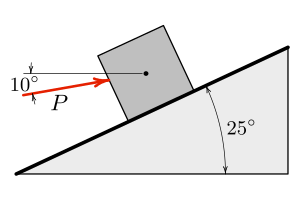
Answer.
\begin{align*}
P \amp = \lb{43.8 }\text{ at }10° \measuredangle\\
N \amp = \lb{102}\text{ at }115° \measuredangle
\end{align*}
Solution.
Assumptions.
We must assume that the block is in equilibrium, that is, either motionless or moving at a constant velocity in order to use the equilibrium equations. We will represent the block’s weight and the force between the incline and the block as concentrated forces. The force of the inclined surface on the block must act in a direction that is normal to the surface since it is frictionless and can’t prevent motion along the surface.
Givens.
The knowns here are the weight of the block, the direction of the applied force, and the slope of the incline. The slope of the incline provides the direction of the normal force.
The unknown values are the magnitudes of forces \(P\) and \(N\text{.}\)
Free-Body Diagram.
You should always begin a statics problem by drawing a free-body diagram. It allows you to think about the situation, identify knowns and unknowns, and define symbols.
We define three symbols, \(W\text{,}\)\(N\text{,}\) and \(P\text{,}\) representing the weight, normal force, and applied force respectively. The angles could be given symbols too, but since we know their values it isn’t necessary.
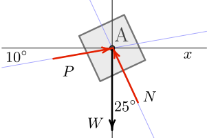
The free-body can be a quick sketch or an accurate drawing but it must show all the forces acting on the particle and define the symbols. In most cases, you won’t know the magnitudes of all the forces, so the lengths of the vectors are just approximate.
Notice that the force \(N\) is represented as acting 25° from the \(y\) axis, which is 90° away from the direction of the surface.
Force Triangle.
Instructions.
You follow along with the instructions on the diagram below by clicking the arrow to go to the start, then click the arrow to step through the process.
Use the known information to carefully and accurately construct the force triangle.
Start by placing point \(A\) at the origin.
Draw force \(\vec{W}\) straight down from \(A\) with a length of 1, and place point \(B\) at its tip. The length of this vector represents the weight.
We know the direction of force \(\vec{P}\) but not its magnitude. For now, just draw line \(BC\) passing through point \(B\) with an angle of 10° from the horizontal.
Similarly we know force \(\vec{N}\) acts at 25° from vertical because it is perpendicular to the inclined surface, and it will close the triangle. So draw line \(CA\) passing through point \(A\) and at a 25° angle from the \(y\) axis.
Call the point where lines \(BC\) and \(CA\) intersect point \(C\text{.}\) Points \(A\text{,}\)\(B\text{,}\) and \(C\) define the force triangle.
Now draw force \(\vec{P}\) from point \(B\) to point \(C\text{,}\) and
Draw force \(\vec{N}\) from point \(C\) back to point \(A\text{.}\)
Results.
In steps 6 and 7, Geogebra tells us that p = (0.438;10.0°) which means force \(P\) is 0.438 units long with a direction of 10°, similarly n = (1.02;115°) means \(N\) is 1.02 units long at 115°. These angles are measured counter-clockwise from the positive \(x\) axis.
These are not the answers we are looking for, but we’re close. Remember that for this diagram, our scale is
so scaling the lengths of p and n by this factor gives
\begin{align*}
P \amp = (\unit{0.438}) (\lb{100}/\unit{})\\
\amp = \lb{43.8} \text{ at } 10° \measuredangle\\
N \amp = ( \unit{1.02}) ({\lb{100}}/\unit{})\\
\amp = \lb{102} \text{ at } 115° \measuredangle
\end{align*}
.
If you use technology such as Geogebra, as we did here, or CAD software to draw the force triangle, it will accurately produce the solution.
If technology isn’t available to you, such as during an exam, you can still use a ruler and protractor to draw the force triangle, but your results will only be as accurate as your diagram. In the best case, using a sharp pencil and carefully measuring lengths and angles, you can only expect about two significant digits of accuracy from a hand-drawn triangle. Nevertheless, even a roughly drawn triangle can give you an idea of the correct answers and be used to check your work after you use another method to solve the problem.
Subsection3.4.4Trigonometric Method
The general approach for solving particle equilibrium problems using the trigonometric method is to:
Draw and label a free-body diagram.
Rearrange the forces into a force triangle and label it.
Identify the knowns and unknowns.
Use trigonometry to find the unknown sides or angles of the triangle.
There must be no more than two unknowns to use this method, which may be either magnitudes or directions. During the problem setup, you will probably need to use the geometry of the situation to find one or more angles.
If the force triangle has a right angle you can use Section B.2 to find the unknown values, but in most cases, the triangle will be oblique and you will need to use either or both of the Law of Sines or the Law of Cosines to find the sides or angles.
Example3.4.4.Cargo Boom.
A \(\kN{24}\) crate is being lowered into the cargo hold of a ship. Boom \(AB\) is \(\m{20}\) long and acts at a 40° angle from kingpost \(AC\text{.}\) The boom is held in this position by topping lift \(BC\) which has a 1:4 slope.
Determine the forces in the boom and in the topping lift.
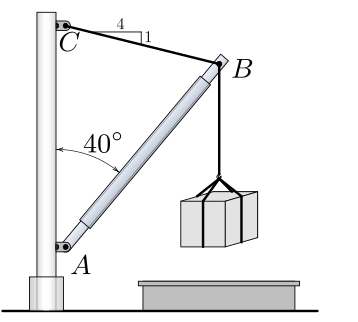
Answer.
\begin{align*}
T\amp= \kN{17.16 } \amp C \amp= \kN{25.9}
\end{align*}
Solution.
Draw diagrams.
Start by identifying the particle and drawing a free-body diagram. The particle in this case is point \(B\) at the end of the boom because it is the point where all three forces intersect. Let \(T\) be the tension of the topping lift, \(C\) be the force in the boom, and \(W\) be the weight of the load. Let \(\alpha\) and \(\beta\) be the angles that forces \(T\) and \(C\) make with the horizontal.
Rearrange the forces acting on point \(B\) to form a force triangle as was done in the previous example.
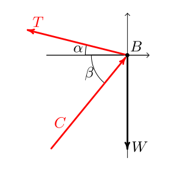
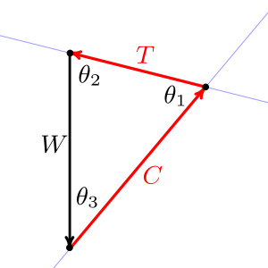
Find angles.
Angle \(\alpha\) can be found from the slope of the topping lift.
\begin{align*}
T \amp = W \left(\frac{\sin \theta_3}{\sin \theta_1}\right) \amp C \amp = W \left(\frac{\sin \theta_2}{\sin \theta_1}\right)\\
T \amp= \kN{24} \left(\frac{\sin 40.0°}{\sin 64.0°}\right) \amp C \amp =\kN{24} \left(\frac{\sin 76.0°}{\sin 64.0°}\right)\\
T\amp= \kN{17.16}\amp C \amp= \kN{25.9}
\end{align*}
Subsection3.4.5Scalar Components Method
The general statement of equilibrium of forces, (3.1.1), can be expressed as the sum of forces in the \(\ihat\text{,}\)\(\jhat\) and \(\khat\) directions
This statement will only be true if all three coefficients of the unit vectors are themselves equal to zero, leading to this scalar interpretation of the equilibrium equation
We will use this equation as the basis for solving two-dimensional particle equilibrium problems in this section and equation (3.4.2) for three-dimensional problems in Section 3.5.
You are undoubtedly familiar with utility poles, which carry electric, cable and telephone lines, but have you ever noticed as you drive down a winding road that the poles will switch from one side of the road to the other and back again? Why is this?
If you consider the forces acting on the top of a pole beside a curving section of road you’ll observe that the tensions of the cables produce a net force towards the road. This force is typically opposed by a “ guy wire ” pulling in the opposite direction which prevents the pole from tipping over due to unbalanced forces. The power company tries to keep poles beside road segments with convex curvature. If they didn’t switch sides, the guy wire for poles at concave curves would extend into the road... which is a poor design.
Example3.4.5.Utility Pole.
Consider the utility pole next to the road shown below. A top view is shown in the right-hand diagram. If each of the six power lines pulls with a force of \(\kN{10.0}\text{,}\) determine the magnitude of the tension in the guy wire.
Answer.
\begin{gather*}
G = \kN{23.6}
\end{gather*}
Solution.
Assumptions.
A utility pole isn’t two-dimensional, but we can solve this problem as if it was by first considering the force components acting in a horizontal plane, and then considering the components in a vertical plane.
It also isn’t a concurrent force problem because the lines of action of the forces don’t all intersect at a single point. However, we can make it into one by replacing the forces of the three power lines in each direction with a single force three times larger. This is an example of an equivalent transformation, a trick engineers use frequently to turn complex situations into simpler ones. It works here because all the tensions are equal, and the outside wires are equidistant from the center wire. You must be careful to justify all equivalent transformations because they will lead to errors if they are not applied correctly. Equivalent transformations will be discussed in greater detail in Section 4.6 later.
Givens.
\(T = \kN{10.0}\) and 38° and 152° angles.
Free-Body Diagram.
Begin by drawing a neat, labeled, free-body diagram of the top view of the pole, establishing a coordinate system and indicating the directions of the forces.
Call the tension in one power line \(T\) and the tension in the guy wire \(G\text{.}\) Resolve the the tension of the guy wire into a horizontal component \(G_h\text{,}\) and a vertical component \(G_v\text{.}\) Only the horizontal component of \(G\) is visible in the top view.
Although it is not necessary, it simplifies this problem considerably to note the symmetry and establish the \(x\) axis along the axis of symmetry.
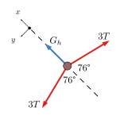
Solution.
Solve for \(G_h\) by applying the equations of equilibrium. The symmetry of this problem means that the \(\Sigma F_x\) equation is sufficient.
Once \(G_h\) is determined, the tension of the guy wire \(G\) is easily found by considering the components of \(G\) in the side view. Note that the vertical component \(G_v\) tends to compress the pole.
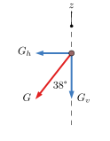
\begin{align*}
G_h/G \amp= \sin \ang{38}\\
G \amp= G_h/\sin \ang{38}\\
G \amp= \kN{23.6}
\end{align*}
This problem could have also been solved using the force triangle method. See Subsection 3.4.3.
In the next example we look at the conditions of equilibrium by considering the load and the constraints, rather than taking a global equilibrium approach which considers both the load and reaction forces.
Example3.4.6.Slider.
Three forces act on a machine part that is free to slide along a vertical, frictionless rod. Forces \(A\) and \(B\) have a magnitude of \(\N{20}\) and force \(C\) has a magnitude of \(\N{30}\text{.}\) Force \(B\) acts \(\alpha\) degrees from the horizontal, and force \(C\) acts at the same angle from the vertical.
Determine the angle \(\alpha\) required for equilibrium, and the magnitude and direction of the reaction force acting on the slider.
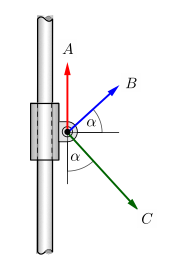
Answer.
The question asks for the reaction force. The reaction force \(\vec{R'}\) is equal and opposite to force \(\vec{R}\text{.}\)
We are given magnitudes of forces \(A= \N{20}\text{,}\)\(B = \N{20}\text{,}\) and \(C = \N{30}\text{.}\) The unknowns are angle \(\alpha\) and resultant force \(R\text{.}\)
Procedure.
Instructions.
This interactive diagram will help you visualize the relationship between angle \(\alpha\) and the resultant load force \(R\text{.}\) When in equilibrium, the rod will supply a reaction force equal and opposite to the resultant load.
Since the rod is frictionless, it cannot prevent the slider from moving vertically. Consequently, the slider will only be in equilibrium if the resultant of the three load forces is horizontal. Since a horizontal force has no \(y\) component, we can establish this equilibrium condition:
This is a single equation with a single unknown, although it is not particularly easy to solve with algebra. One approach is described at socratic.org 2
socratic.org/questions/59e5f259b72cff6c4402a6a5
. An alternate approach is to use technology to graph the function \(y(x) = 2 + 2 \sin x - 3 \cos x\text{.}\) The roots of this equation correspond to values of \(\alpha\) which satisfy the equilibrium condition above. The root occurring closest to \(x=0\) will be the answer corresponding to our problem, in this case \(\alpha = 22.62°\) which you can verify by plugging it back into the equilibrium equation. Note that -90° also satisfies this equation, but it is not the solution we are looking for.
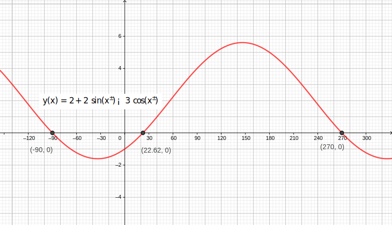
Once \(\alpha\) is known, we can find the reaction force by adding the \(x\) components of \(A\text{,}\)\(B\text{,}\) and \(C\text{.}\)
The resultant force \(\vec{R}\) is the vector sum of \(R_x\) and \(R_y\text{,}\) but in this situation \(R_y\) is zero, so the resultant acts purely to the right with a magnitude of \(R_x\text{.}\)
Note that this value is the resultant force, i.e. the net force applied to the slider by \(\vec{A}\text{,}\)\(\vec{B}\text{,}\) and \(\vec{C}\text{.}\) However, the question asks for the reaction force, which is the force required for equilibrium. The reaction is equal and opposite to the resultant.
The next example demonstrates how rotating the coordinate system can simplify the solution. In the first solution, the standard orientation of the \(x\) and \(y\) axes is chosen, and in the second the coordinate system is rotated to align with one of the unknowns, which enables the solution to be found without solving simultaneous equations.
Example3.4.7.Roller.
A lawn roller which weighs \(\lb{160}\) is being pulled up a \(\ang{10}\) slope at a constant velocity.
Determine the required pulling force \(P\text{.}\)
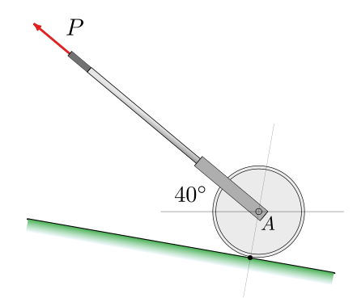
Answer.
\begin{equation*}
P = \lb{32.1}
\end{equation*}
Solution1.
Strategy.
Select a coordinate system, in this case, horizontal and vertical.
Draw a free-body diagram
Solve the equations of equilibrium using the scalar approach.
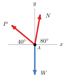
Procedure.
\begin{align*}
\Sigma F_x \amp = 0 \amp \Sigma F_y \amp = 0\\
-P_x + N_x \amp = 0 \amp P_y + N_y \amp = 0\\
N \cos \ang{80} \amp = P \cos \ang{40} \amp P \sin \ang{40} + N \sin \ang{80} \amp = W\\
N \amp = P \left(\frac{0.766}{0.174} \right) \amp 0.643 P + 0.985 N \amp = \lb{160}
\end{align*}
Solving simultaneously for \(P\)
\begin{align*}
0.643 P + 0.985 ( 4.40 P) \amp = \lb{160}\\
4.98 P \amp = \lb{160}\\
P \amp = \lb{32.1}
\end{align*}
Solution2.
Strategy.
Rotate the standard coordinate system \(\ang{10}\) clockwise to align the new \(y'\) axis with force \(N\text{.}\)
Draw a free-body diagram and calculate the angles between the forces and the rotated coordinate system.
Solve for force \(P\) directly.
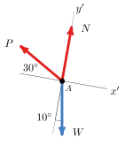
Procedure.
\begin{align*}
\Sigma F_{x'} \amp = 0 \\
-P_{x'} + W_{x'} \amp = 0 \\
P \cos \ang{30} \amp = W \sin \ang{10} \\
P \amp = \lb{160} \left( \frac{0.1736}{0.866} \right)\\
P \amp = \lb{32.1}
\end{align*}
Subsection3.4.6Multi-Particle Equilibrium
When two or more particles interact with each other there will always be common forces between them as a result of Newton’s Third Law, the action-reaction principle.
Consider the two boxes with weights \(W_1\) and \(W_2\) connected to each other and the ceiling shown in the interactive diagram. Position one shows the physical arrangement of the objects, position two shows their free-body diagrams, and position three shows simplified free-body diagrams where the objects are represented by points. The boxes were freed by replacing the cables with tension forces \(T_A\) and \(T_B\text{.}\)
Figure3.4.8.Two suspended weights
From the free-body diagrams you can see that cable \(B\) only supports the weight of the bottom box, while cable \(A\) and the ceiling support the combined weight. The tension \(T_B\) is common to both diagrams. Recognizing the common force is the key to solving multi-particle equilibrium problems.
Example3.4.9.Two hanging weights.
A \(\N{100}\) weight \(W\) is supported by cable \(ABCD\text{.}\) There is a frictionless pulley at \(B\) and the hook is firmly attached to the cable at point \(C\text{.}\)
What is the magnitude and direction of force \(\vec{P}\) required to hold the system in the position shown?
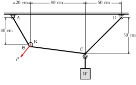
Hint.
The particles are points \(B\) and \(C\text{.}\) The common force is the tension in rope segment \(BC\text{.}\)
Following the General Procedure we identify the particles as points A and B, and draw free-body diagrams of each. We label the rope tensions \(A\text{,}\)\(C\text{,}\) and \(D\) for the endpoints of the rope segments, and label the angles of the forces \(\alpha\text{,}\)\(\beta\text{,}\) and \(\phi\text{.}\) We will use the standard Cartesian coordinate system and use the scalar components method.
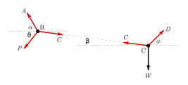
Weight \(W\) was given, and we can easily find angles \(\alpha\text{,}\)\(\beta\text{,}\) and \(\phi\) so the knowns are:
Counting unknowns we find that there are two on the free-body diagram of particle \(C\) (\(C\) and \(D)\text{,}\) but four on particle \(B\text{,}\) (\(A\)\(C\text{,}\)\(P\) and \(\theta\)).
Two unknowns on particle \(C\) means it is solvable since there are two equilibrium equations available, so we begin there.
Solve Particle C.
\begin{align*}
\Sigma F_x \amp = 0 \amp \Sigma F_y \amp = 0\\
- C_x + D_x \amp = 0 \amp C_y + D_y - W \amp = 0\\
C \cos \beta \amp = D \cos \phi \amp C \sin \beta + D \sin \phi \amp= W\\
C \amp = D \left(\frac{\cos \ang{45}}{\cos \ang{7.13}}\right) \amp C \sin \ang{7.13} + D \sin \ang{45} \amp = \N{100}\\
C \amp = 0.713 D \amp 0.124 C + 0.707 D \amp = \N{100}
\end{align*}
Solving these two equations simultaneously gives
\begin{align*}
C \amp =\N{89.6} \amp D \amp = \N{125.7}
\end{align*}
.
With particle \(C\) solved, we can use the results to solve particle \(B\text{.}\) There are three unknowns remaining, tension \(A\text{,}\) magnitude \(P\text{,}\) and direction \(\theta\text{.}\) Unfortunately, we still only have two available equilibrium equations. When you find yourself in this situation with more unknowns than equations, it generally means that you are missing something. In this case, it is the pulley. When a cable wraps around a frictionless pulley the tension doesn’t change. The missing information is that \(A = C\text{.}\) Knowing this, the magnitude and direction of force \(\vec{P}\) can be determined.
Solve Particle B.
Referring to the FBD for particle \(B\) we can write these equations.
These are the magnitude and direction of vector \(\vec{P}\text{.}\) If you wish, you can express \(\vec{P}\) in terms of its scalar components. The negative signs on the components have been applied by hand since \(\vec{P}\) points down and to the left.
\begin{align*}
\vec{P} \amp= \langle - P \cos\theta, - P \sin\theta \rangle\\
\amp = \langle \N{-48.8}, \N{-69.0} \rangle
\end{align*}

![Looking at the top view of a utility pole, two parallel, horizontal members called crossarms at the top are shown. On each crossarm, three tensile forces act away from the utility pole. The tensions going to the right are 152 degrees from the tensions going to the left. Because of the type of connection of the cables to the crossarms, the tension in each cable is the same magnitude. A "guy wire" G acts 256 degrees from the tensile forces acting to the left, which is 104 degrees from the tensile forces acting to the right.](external/images/utilitypole.svg)